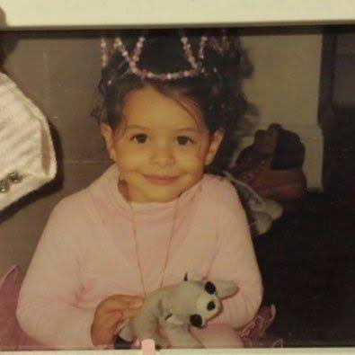

Melanie Martinez nasceu em Astoria, no bairro do Queens, em Nova York, no dia 28 de abril de 1995. Filha de pais de ascendência porto-riquenha e dominicana, Melanie cresceu em uma família latina nos Estados Unidos e, desde muito jovem, demonstrou interesse pela música e pela arte. Durante a infância e a adolescência, começou a desenvolver sua identidade artística, aprendendo a tocar violão e escrevendo suas próprias músicas. Suas experiências pessoais, emoções e lembranças da infância acabariam se tornando algumas das principais inspirações para sua carreira. Desde cedo, Melanie encontrou na música uma maneira de expressar sentimentos que nem sempre conseguia colocar em palavras. Suas composições começaram a abordar assuntos como insegurança, relacionamentos, amadurecimento, problemas familiares, traumas e as dificuldades de crescer. Ao mesmo tempo, ela desenvolveu um interesse muito forte pela estética visual. Em vez de seguir apenas os padrões tradicionais da música pop, Melanie passou a construir uma identidade própria, marcada por cabelos com duas cores, roupas inspiradas em bonecas, elementos infantis e uma aparência propositalmente delicada que contrastava com temas mais sérios presentes em suas letras. Sua primeira grande oportunidade aconteceu em 2012, quando Melanie participou da terceira temporada do programa de televisão The Voice, nos Estados Unidos. Durante as audições, ela chamou a atenção dos jurados ao apresentar uma versão diferente da música “Toxic”, originalmente interpretada por Britney Spears. Sua apresentação mostrou uma cantora com uma voz marcante e uma maneira bastante particular de interpretar músicas conhecidas. Melanie fez parte da equipe de Adam Levine e avançou na competição, mas acabou sendo eliminada antes da final. Apesar de não ter vencido o programa, sua participação em The Voice ajudou a tornar seu nome conhecido e lhe deu a oportunidade de alcançar um público maior. Depois da competição, Melanie continuou trabalhando em sua carreira e começou a lançar suas próprias músicas. Em 2014, assinou contrato com a Atlantic Records e lançou seu primeiro EP, Dollhouse. A faixa-título apresentava uma das características que se tornariam fundamentais em seu trabalho: utilizar imagens associadas à infância e à aparência de uma família perfeita para falar sobre problemas escondidos por trás das aparências. A partir de Dollhouse, Melanie começou a construir um universo artístico próprio. Suas músicas passaram a ser acompanhadas por videoclipes que contavam histórias e apresentavam personagens, cores, cenários e símbolos recorrentes. Sua estética não era apenas uma forma de chamar atenção, mas também uma maneira de reforçar as ideias presentes em suas músicas. O contraste entre elementos infantis e assuntos mais pesados tornou-se uma das marcas mais reconhecíveis de sua carreira. Cry Baby Em 2015, Melanie Martinez lançou seu primeiro álbum de estúdio, Cry Baby. O disco foi responsável por consolidar sua identidade artística e apresentou ao público uma personagem chamada Cry Baby, que funciona como uma espécie de representação da própria Melanie e de experiências relacionadas à infância, à adolescência e ao crescimento. O conceito do álbum gira em torno de uma personagem que enfrenta diferentes situações enquanto tenta compreender seus sentimentos e o mundo ao seu redor. Cada música apresenta uma história ou uma situação diferente, mas todas fazem parte de um universo conectado. Melanie utiliza elementos infantis, como brinquedos, doces, bonecas e histórias de família, para tratar de assuntos que podem ser bastante complexos. Entre as músicas mais conhecidas do álbum estão “Cry Baby”, “Dollhouse”, “Sippy Cup”, “Soap”, “Training Wheels”, “Pity Party” e “Mrs. Potato Head”. Em “Cry Baby”, por exemplo, a artista fala sobre ser uma pessoa muito sensível e sobre como essa característica pode ser vista negativamente pelos outros. Já “Dollhouse” apresenta uma família que parece perfeita por fora, mas que esconde diversos problemas. Cry Baby também foi importante porque mostrou que Melanie pretendia criar mais do que simplesmente uma sequência de músicas. Ela estava construindo uma história. Os videoclipes e as apresentações ajudaram a desenvolver esse universo, e a personagem Cry Baby tornou-se uma parte fundamental da imagem da cantora. O álbum teve grande repercussão e ajudou Melanie a conquistar fãs em diferentes países. Sua mistura de pop alternativo, elementos eletrônicos e uma estética visual inspirada na infância fez com que ela se diferenciasse de muitos outros artistas que estavam surgindo naquele período. K-12 Depois de Cry Baby, Melanie Martinez passou vários anos desenvolvendo seu próximo projeto. Em 2019, lançou K-12, seu segundo álbum de estúdio. O trabalho continuou a história de Cry Baby, mas dessa vez a personagem é colocada dentro de uma escola. O próprio título, K-12, faz referência ao sistema educacional norte-americano que compreende os anos escolares anteriores ao ensino superior. Melanie utiliza a escola como uma representação da sociedade e aborda diferentes problemas relacionados à infância, adolescência, educação, pressão social e relacionamentos. Uma das características mais marcantes do projeto foi o fato de o álbum ter sido acompanhado por um filme musical também chamado K-12. Melanie escreveu, dirigiu e estrelou o filme, mostrando novamente sua preocupação em unir música e narrativa visual. Dessa maneira, as músicas não funcionam apenas individualmente, mas também fazem parte de uma história maior. O álbum começa com “Wheels on the Bus”, que apresenta Cry Baby chegando à escola e percebendo que aquele ambiente não é necessariamente o lugar seguro e organizado que deveria ser. Ao longo das músicas, Melanie aborda temas como bullying, padrões de beleza, sexualização, amizades, relacionamentos abusivos, pressão social e desigualdade. Canções como “Class Fight”, “The Principal”, “Strawberry Shortcake”, “Lunchbox Friends”, “Teacher’s Pet” e “Nurse’s Office” exploram diferentes experiências vividas por Cry Baby e pelas pessoas ao seu redor. Apesar de utilizar uma estética colorida e infantil, Melanie apresenta críticas a problemas que podem fazer parte da vida de adolescentes e adultos. K-12 também mostrou um crescimento na produção musical e visual da artista. O projeto apresentou cenários elaborados, figurinos bastante característicos e uma narrativa contínua. A escola se transforma em um mundo fantástico, mas ao mesmo tempo representa situações reais. Essa combinação entre fantasia e realidade tornou-se uma das características mais importantes da obra de Melanie. Portals Após o período de K-12, Melanie Martinez passou por uma nova transformação artística. Em 2023, lançou Portals, seu terceiro álbum de estúdio. O projeto marcou uma mudança bastante grande em sua aparência, em sua sonoridade e na maneira como a história de Cry Baby era apresentada. Em Portals, Cry Baby aparece como uma criatura de quatro olhos, com uma aparência fantástica e sobrenatural. A mudança visual representa uma espécie de renascimento da personagem. Enquanto Cry Baby estava ligado principalmente à infância e K-12 utilizava a escola para representar o crescimento, Portals trabalha muito mais com temas como morte, renascimento, espiritualidade, transformação, identidade e passagem do tempo. O álbum começa com “Death”, uma música que apresenta justamente a ideia de que a morte não significa necessariamente um fim. Essa ideia é importante para compreender o conceito do projeto, já que Melanie utiliza a morte e o renascimento como metáforas para mudanças pessoais e para diferentes fases da vida. Outras músicas do álbum, como “Void”, “Tunnel Vision”, “Faerie Soirée”, “Light Shower”, “Spider Web” e “Evil”, exploram diferentes sentimentos e experiências. Musicalmente, Portals apresenta uma sonoridade mais atmosférica e experimental, misturando elementos de pop alternativo com influências eletrônicas e uma produção mais intensa. A estética de Portals também chamou bastante atenção. A personagem criada para representar essa nova fase possui quatro olhos, pele em tons rosados e elementos inspirados em criaturas fantásticas. Embora a aparência possa parecer estranha ou até assustadora à primeira vista, ela está diretamente relacionada ao conceito de transformação presente no álbum. Com Portals, Melanie mostrou que sua carreira não dependia apenas da personagem infantil de Cry Baby. Ela conseguiu transformar a personagem e seu universo em algo maior, acompanhando uma narrativa de crescimento e mudança. O projeto representa, portanto, uma nova etapa na trajetória artística da cantora. Hades Depois de Portals, Melanie Martinez continuou expandindo o universo que havia construído ao longo de sua carreira. A nova fase de sua história está relacionada ao projeto Hades, que dá continuidade à narrativa iniciada anteriormente e aprofunda os temas de transformação, morte, renascimento e existência. O conceito de Hades está relacionado à mitologia e ao submundo, o que combina com a evolução da personagem apresentada em Portals. A escolha desse nome também reforça a ideia de uma jornada por diferentes mundos e estados de existência. Em vez de simplesmente repetir a estética de seus trabalhos anteriores, Melanie procura ampliar a narrativa e apresentar uma nova etapa da personagem. Essa evolução demonstra como a carreira da artista sempre esteve muito ligada à criação de conceitos. Desde Dollhouse, passando por Cry Baby, K-12 e Portals, Melanie Martinez construiu uma trajetória na qual música, moda, videoclipes, personagens e narrativa estão profundamente conectados. Ao longo dos anos, sua imagem artística passou por diversas transformações, mas alguns elementos permaneceram presentes: a utilização de símbolos relacionados à infância, a mistura entre beleza e estranheza, as histórias sobre sentimentos humanos e a tentativa de transformar experiências pessoais em narrativas com as quais outras pessoas possam se identificar. A carreira de Melanie Martinez, portanto, pode ser entendida como uma grande história de transformação. Ela começou como uma jovem cantora que ganhou visibilidade em The Voice e, posteriormente, criou um universo artístico próprio. Cry Baby apresentou sua personagem e estabeleceu sua identidade; K-12 levou essa personagem para um ambiente escolar e abordou questões relacionadas ao crescimento; Portals representou uma transformação mais profunda, marcada pela ideia de morte e renascimento; e Hades dá continuidade a essa jornada. Mais do que uma cantora de pop alternativo, Melanie Martinez se tornou conhecida por criar experiências completas, nas quais as músicas contam histórias e os elementos visuais ajudam a desenvolver seus significados. Sua capacidade de combinar temas pessoais com fantasia, simbolismo e uma estética facilmente reconhecível fez com que ela construísse uma identidade artística muito particular. Essa mistura é uma das principais razões pelas quais Melanie conseguiu formar uma base de fãs tão dedicada e manter seu trabalho reconhecível mesmo depois de tantas mudanças em sua carreira.
